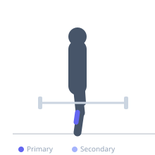
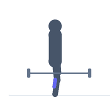

Exercise guide / Donkey Calf Raise
Donkey Calf Raise
The donkey calf raise is performed with the torso bent forward at approximately 90° with the hips flexed, which places the gastrocnemius under a greater stretch at the hip than a standing calf raise. Because the gastrocnemius is a biarticular muscle crossing both the knee and hip, the hip-flexed position elongates it, increasing the range of motion and stretch on the gastrocnemius medial and lateral heads. It was popularized as a mass-building calf exercise and can be loaded by having a training partner sit on the hips.
Primary muscles
gastrocnemius medial
gastrocnemius lateral
soleus
Secondary muscles
Equipment
No Equipment (Bodyweight)


Starting position
- Hinge at the hips and brace the hands on a bench, barbell, or wall at hip height. Keep the knees very slightly bent. Stand with the balls of the feet on a raised surface (step edge or plate).
Setup
- Place the toes on a step edge or plate so the heels can drop below the platform for full stretch. Hinge the torso to 90° — this is essential for the elongated gastrocnemius position.
Steps
- Step 1: Position the toes on the edge of a raised surface. Hinge the torso forward 90° and hold onto a support.
- Step 2: Lower the heels as far below the step as range of motion allows — full gastrocnemius stretch.
- Step 3: Rise onto the toes as high as possible, fully plantar-flexing both ankles.
- Step 4: Hold the peak contraction briefly with the calves fully contracted.
- Step 5: Lower under control to the stretched position.
Coaching cues
- Drop the heels all the way — don't cheat the stretch
- Rise all the way onto the big toe
- Hips bent 90° — don't stand up during the exercise
Breathing
- Exhale as you rise onto the toes. Inhale as you lower.
Range of motion
- Full heel drop below the platform at the bottom; maximum plantar-flexion at the top.
Tempo
- 2-1-3-0 — slow controlled descent (3s) to maximize gastrocnemius stretch
Common mistakes
- Performing with an upright torso, which removes the gastrocnemius pre-stretch benefit
- Insufficient heel drop at the bottom — reduces the range of motion
- Bouncing through the bottom position — slow the eccentric
Safety
- If a partner is adding load by sitting on the hips, communication is essential
- Start with bodyweight to establish the movement pattern
Training
- strength: 8–15 reps
- hypertrophy: 15–25 reps
- endurance: 20–30 reps
- strength: 3–4 sets
- hypertrophy: 3–5 sets
- endurance: 2–4 sets
- Rest: {'strength': 90, 'hypertrophy': 60, 'endurance': 30}